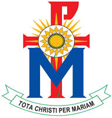

SEJARAH SMA KATOLIK MATER DEI
Sejarah Singkat - Mater Dei
Sejarah Singkat
Sejarah SMA Katolik Mater Dei Pamulang pada awalnya dimulai dari animo masyarakat akan adanya kebutuhan sebuah sekolah menengah atas yang katolik di daerah Pamulang, maka para Suster SPM menanggapi kebutuhan itu dan pada tanggal 3 Oktober 1990 dikeluarkan surat keputusan dari kanwil P dan K Provinsi Jawa Barat dengan nomor 445/102/kep/Ë90 yang berisi tentang persetujuan beroperasinya SMA Strada Sanjaya.
SMA Katolik Mater Dei pada awalnya bernama SMA Strada Sanjaya, yang kala itu pengelolaannya di bawah Perkumpulan Strada berpusat di Jl. Gunung Sahari Jakarta Pusat. SMA Strada Sanjaya meskipun pengelolaan awalnya di bawah Perkumpulan Strada, namun pemiliknya adalah para Suster SPM yang berpusat di Probolinggo.
SMA Strada Sanjaya didirikan atas dasar kebutuhan masyarakat setempat yang awalnya baru ada TK, SD dan SMP Strada Sanjaya (usianya lebih tua). Pada awal tahun berdiri jumlah guru karyawan 8 orang dan jumlah murid 42 anak. Pada tahun 1990 – 1992 SMA Strada Sanjaya menggunakan ruang kelas SMP Strada Sanjaya (yang sekarang menjadi SMP Mater Dei), demikian juga untuk ruang guru menjadi satu dengan ruang guru SMP Strada Sanjaya.
Pada tahun pelajaran 1992/1993 SMA Strada Sanjaya telah memiliki gedung sendiri yang diresmikan oleh Mgr. Leo Soekoto,S.J tanggal 22 Agustus 1992. Siswa angkatan I mengalami ujian Nasional menggabung di SMAN I Ciputat tahun 1993. Sedangkan mulai angkatan II dan seterusnya sudah ujian nasional mandiri. Sampai dengan tahun 1993, SMA Strada Sanjaya berada di bawah naungan Perkumpulan Strada (IC4J).
Adapun tenaga guru dan karyawan yang pertama kali berkarya di sekolah ini adalah:
- Bpk. Drs. Anthonius Sutopo (RIP); Kepala Sekolah
- Bpk. Drs. Th A. Herri Poernomo
- Ibu Dra. Lucia Tuty Hartiningsih
- Bpk Drs. Sang Made Sueca
- Bpk. Ignatius Sunaryo
- Ibu Dra. MM Niniek Yunastanti
- Stanislaus Hartadi (pelaksana TU)
- Salamun (pembantu pelaksana)
Namun berdasarkan akta notaris No: 89 tanggal 13 April 1993, Perkumpulan Strada menghibahkan sekolah-sekolah Strada Sanjaya Pamulang (mulai dari TK sampai dengan SMA) kepada Yayasan Santa Perawan Maria ( SPM). Sejak saat itu, nama-nama Sekolah Strada Sanjaya Pamulang atas usul para guru bersama kepala sekolah, diubah menjadi Mater Dei, yang berarti Ibu Tuhan.
Dan sejak saat itulah SMA Strada Sanjaya berubah nama menjadi SMA Mater Dei. Seiring dengan perkembangan yang diraih oleh SMA Katolik Mater Dei maka jumlah siswa yang diterima mengalami kenaikan. Hal ini membuktikan bahwa keberadaan SMA Mater Dei sudah dikenal masyarakat umum.
Namun seiring dengan tuntutan jaman dan persaingan yang ketat, jumlah murid yang masuk juga mengalami pasang surut. Saat ini tahun pelajaran 2016/2017 jumlah murid yang ada 411 anak. Dalam usianya yang ke-26 tahun, SMA Katolik Mater Dei telah meluluskan alumninya 3.432 lulusan yang keberadaannya sudah tersebar di berbagai daerah dan negara.
Berikut Kepala Sekolah yang berkarya di SMA Mater Dei:
- 1990 – 1993 Drs. Antonius Sutopo
- 1993 – 2000 Sr. Laurentia , SPM
- 2000 – 2011 Dra. Lucia Tuty Hartiningsih
- 2011 – 2014 Sr. Elsa Supartinah , SPM
- 2014 – sekarang Lucia Tuty Hartiningsih
Berikut adalah suster-suster yang pernah berkarya di SMA Mater Dei:
- 1990 – 1992 Sr. M. Christera, SPM
- 1992 – 1995 Sr.M. Hendrika, SPM
- 1995 – 1997 Sr. M. Lusi, SPM
- 1997 – 1998 Sr. M. Inigo, SPM
- 1998 – 2008 Sr. M. Melani,SPM
- 2008 – 2013 Sr.M. Gracia, SPM
- 2013 – 2015 Sr.M. Elline,SPM
- 2015 – 2017 Sr. M. Elfrida, SPM
- 2017 – 2018 Sr. Christera, SPM
Demikianlah sekilas sejarah perjalanan SMA Katolik Mater Dei, di saat memasuki usia ke-25 tahun. Semoga ke depan terus berdaya pikat dan berdaya tarik serta berdaya tahan bagi masyarakat dan mampu melayani stageholder sesuai tuntutan jaman sehingga mampu bersaing di tengah kerasnya kompetisi masyarakat global.
(Artikel: Lucia Tuty Hartiningsih)
SMA Katolik Mater Dei Pamulang
Menu
Follow Us
Copyright ©: 2019 - SMA Katolik Mater Dei